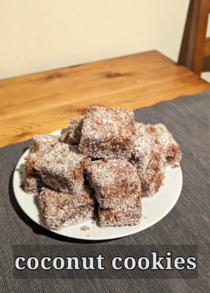
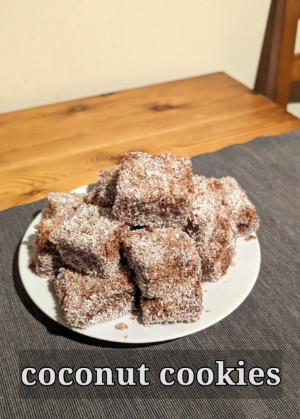
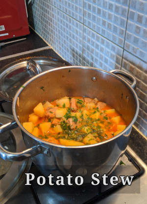
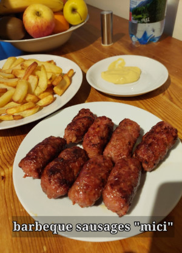
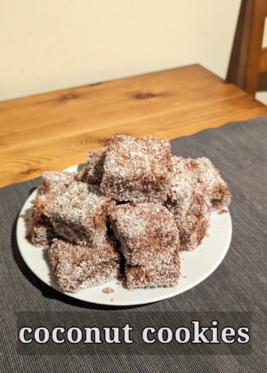
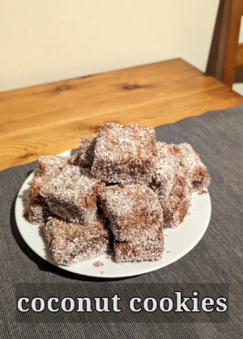

European Recipes
European Savory




European cuisine is diverse and varies by country, but it generally features fresh, seasonal ingredients, bold flavors, and a variety of cooking techniques. European cuisine uses fresh, locally sourced ingredients like fruits, vegetables, meats, and seafood. Meat is more prominent in European cuisine than in East Asian cooking, and dairy products are also widely used. Couple of food dishes from Europe, from Transylvania, Traditional food plates for first and second course, as well delicios desserts. You could find the original taste, of course, if you travel across of europe or you can get the taste of them in your kitchen and serve them with family and friends. You can watch here a video about Romanian Cuisine.
Transylvania dishes
Spanish dishes
- 🧅 What to eat in europe?
- 🍅 which are the most popular food dishes in europe?
- 🥦 which are the traditional food by each country in europe?
- 🥬 What can I eat in France, the best known everyday dishes?
- 🍩 What is recomended to eat in England?
- 🍕 What is the best food in Italy?
- 🍷 What food dishes are most beloved in Spain ?
- 🥣 Do you want your favorite dish to share on internet>